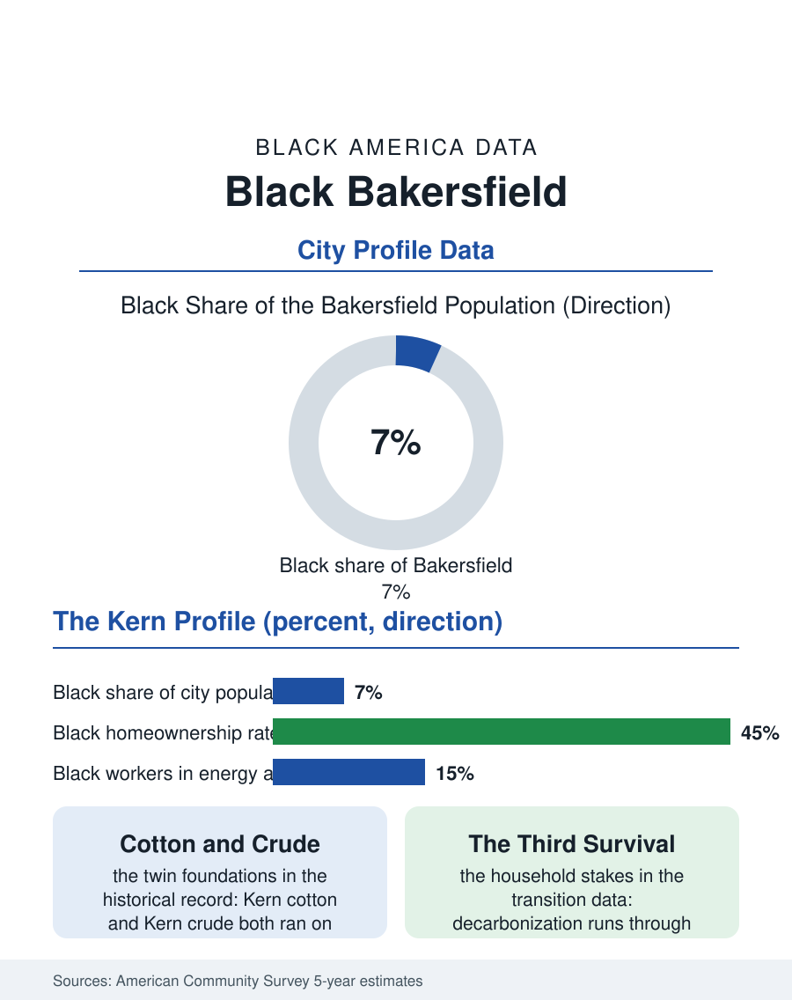

Black Cities
Cotton and Crude: Black Bakersfield
Oil and cotton built East Bakersfield's Black community, and the energy transition is now the question its third survival turns on. The Bakersfield file.

Bakersfield's Black community, roughly twenty-eight thousand people in a city of about four hundred thousand, about seven percent, grew up with the two industries that define Kern County: oil and agriculture. The cotton fields of the southern valley and the oil fields of the western hills both ran on Black labor in the twentieth century, and the community they built, centered in East Bakersfield, is one of California's most working-class Black populations, with a profile the census draws in the valley's own terms. This article reads the Bakersfield file.
Cotton, Crude, and the East Side
The migration that built Black Bakersfield was the Dust Bowl's Black tributary, families from Oklahoma, Texas, Arkansas, and Louisiana who followed the cotton economy west in the 1930s and 1940s and the defense and oil booms after, settling in the Lakeview and Cottonwood districts of the east side. Kern County was a serious cotton economy, and its labor camps and gin work employed Black families in a system whose hardships the state historical record documents plainly, while the oil fields west of town, some of California's richest, hired Black roughnecks and roustabouts into one of the era's best-paid blue-collar workforces. The community that resulted built its institutions in the east side pattern: churches that remain the civic core, a business strip along the old corridors, and a school tradition carried by East Bakersfield High. The postwar oil economy gave the community a homeowner base unusual for farm-country Black populations, oil wages converting to mortgages through the postwar decades, and though both legacy industries have shrunk as employers, the community's geography and institutions have persisted into the logistics and health care era.
The Numbers in the Survey
The American Community Survey profile is the valley working-class portrait. Employment concentrates in health care, the metro's hospital systems having become its largest employers, in logistics along the highway corridors, in the remaining energy sector, and in the public schools and county government. Median Black household income runs below the statewide Black figure, reflecting Kern's wage structure, while poverty rates run above the state average, again the valley pattern. Homeownership among Black households sits near the middle of the atlas's city table, held up by the oil generation's purchases and by housing prices that remain Californian only in name, a fraction of the coastal market, drawing the same priced-out inflow from Los Angeles that the Fresno file records, two hours closer. Educational attainment trails the state pattern, with California State University, Bakersfield, and Bakersfield College, a giant of the community college system, carrying the local pipeline; the college's Black enrollment and the university's are the community's professional seedbed, and both institutions' completion data appear in the education files as the valley's central question. Health burdens carry the double valley signature: some of America's worst air, the dust and diesel and field chemicals of the basin, registering in asthma and respiratory rates, plus the occupational residue of the oil and field generations in the older population's chronic disease profile.
Energy Transition at Ground Level
Bakersfield's forward file is the energy transition written at household scale. Kern County produces most of California's oil, and the state's decarbonization path runs directly through the county's employment base, a workforce in which Black roughnecks, truckers, and refinery and field-service workers hold real stakes. The transition's literature speaks of just-transition funds and retraining, and the community's interest is concrete: whether the solar fields spreading over the valley floor, the carbon management projects proposed for the depleted reservoirs, and the logistics economy's growth employ the east side at the rates the oil economy did, at wages that support the homeownership the oil economy bought. The water file presses simultaneously, groundwater regulation reorganizing the farm economy that still employs the community's seasonal segment. Against these headwinds the file records the community's durable assets: land and homes owned at prices that cannot be replicated on the coast, institutions a century deep, and a position at the exact intersection, energy, food, logistics, where California's next economy is being assembled. Bakersfield's Black community has survived the end of the world twice, when cotton mechanized and when oil contracted, by the method this atlas keeps documenting, staying, organizing, and re-entering the next economy from its own ground. The census counts seven percent of a fast-growing city, and the east side's churches are already counting the third survival.
More in Black Cities
Black Atlanta: Population, Distribution, and Growth of a Black Metropolis
Metro Atlanta holds more than two million Black residents — roughly one in three, second only to New York. The suburban distribution, migration history, and composition of Black Atlanta in the census data.
Black New York: The Largest Black Population in America
The New York metropolitan area holds about 3.4 million Black residents — more than any metro in the nation — and the city itself about two million. The census profile.
Black Washington: The District and the Metro
The Washington metro holds about 1.6 million Black residents, and the District itself — long a majority-Black city — now records a Black share near 41 percent. The census profile.
Source: U.S. Census Bureau, American Community Survey 5-year estimates for the Bakersfield, CA metropolitan area; Kern County historical society records.